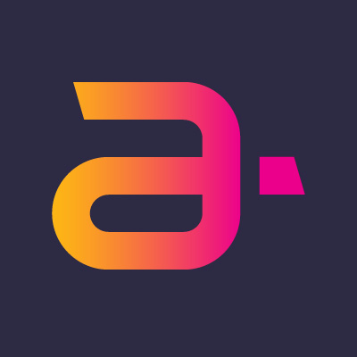

Worked on a wide range of areas in meta, including consumer-facing apps (mobile/desktop websites and native apps) and internal tools (with focus on Data/ML tooling).
Infra (Tech Lead)
Tech lead for multiple infra groups focusing on observability, monitoring, data quality and troubleshooting for data pipelines (batch, streaming, ML) and GenAI tooling.
Building web based product flows to enable data/ML engineers and researchers to quickly identify and resolve data issues
Developing company wide real time data quality infrastructure to detect data drifts and prevent data corruption and/or ML model quality issues in production.
Mostly working with react and hack for web development and python for backend processing.
Improving new user registration flows for Facebook, Instagram and messenger, including working with various XFNs such as UX research and data scientists and external teams such as Google WebOTP team.
Worked on the first version of the new mobile site based on FBLite native app stack, including building the initial rendering capabilities, integration of native app to web stack (history, navigation, upload capabilities, etc...).
Owned the Facebook level SEO responsibility, including working on many product surfaces and teams (pages, profiles, groups, etc...) to support google transition to mobile first indexing
Mostly working with vanilla JS, react, hack and Java.
All work backed with data analysis to help find opportunities and make sure all new features meet their goals.
Web Developer @ EBS BrokerTec
Web developer and team leader, focusing on the companies main trading and admin applications.
UI Development
Development mainly based on AngularJS, including development of angular directives for common UI components, angular filters and angular services.
Development with Angular Material, JQuery UI widgets, Bootstrap, AngularUI, HTML 5 and other frontend technologies and libraries
CSS development via SASS and Less, as well as CSS3 extended capabilities, animations and transitions.
Developing low level UI components using Polymer (Web Components)
Development of automatic UI unit tests based on Karma + Mocha
Backend Development based on NodeJS
Development with express, including development of express middlewares for security, routing, REST and more.
Development with sails.js, including development of sails policies, bootstraping, controllers, models and auth flow.
Working with Redis, MongoDB and Oracle
Extended nginx capabilities to add custom logic using lua scripting (based on open resty)
Development of high performance TCP based integration with other systems
Developed monitoring agents for processes health, remote configuration management, IDM integration and other frameworks.
Developed SAML based auth flow
Development of automatic unit tests based on Mocha
Deployment and Build
Creating Docker images for Docker container based deployment
Setting up Jenkins jobs for continuous integration builds
Developing Grunt and gulp based build scripts for running automatic unit tests, code inspection tools and more.
Developed a shell + js based installer
amdocs
Worked in various roles in the company, from a full stack developer and up to software architect.
UI Development (Web)
Developing and migrating the CRM swing based UI to web UI
UI development based on HTML 5, JQuery, RequireJS, backbone and other front-end technologies.
Development of UI to backend integration via REST services using apache CXF
Writing the base frameworks for both UI and REST layers.
Writing unit level automation tests
Writing a multi module maven build for entire project with integration to grunt based build for the JS code base
Creation of a windows and linux installer based on apache ANT
Legacy system UI development was based on JSP/Servlets technology.
Java Development
Writing common frameworks used in the project (encryption, batch processes, integration adapters).
Development of back-end integration based on: Web Services, EJBs (session beans and JMS) and Tuxedo.
UI development based on java Swing.
In charge of the performance tuning of the application and using 3rd party tools such as jprofiler, jprobe and more.
Architect
In charge of multiple different CRM solutions for different major telephony companies such as AT&T.
In charge of the general technical design of the CRM system including building requirements and providing effort estimations.
Leading the adoption of continuous integration in the division, including: build transformation to maven, backend testing automation via junit, CI via jenkins and more
Leading changes of code inspection processes and tools (PMD, SONAR, ...)
Technical support for the CRM experts and developers.
Development of JavaScript based tools to developers and testers.
Working with the customer including at the customer site.
Meta